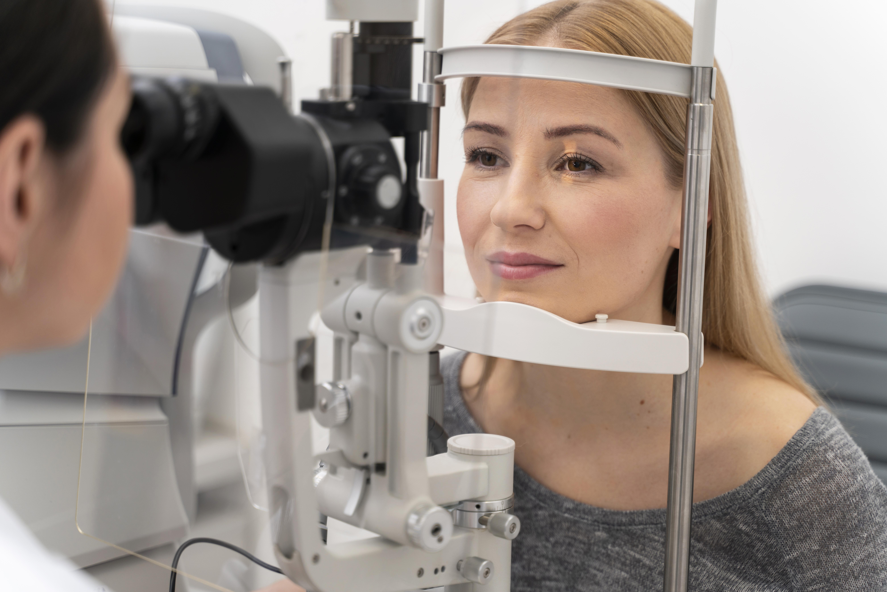

CareConnect
CADASTRE-SE
ENTRAR
Especialidades
Agendar Consulta
+Serviços
Pediatra
Ginecologia
Cardiologia
Ortopedia
Dermatologia
Oftalmologia
Odontologia
Tipo de Consulta
ACESSAR
Nossos Serviços
Cardiologista
Agendamento fácil e rápido com cardiologistas especializados, garantindo cuidados especializados para sua saúde cardiovascular.
Pediatria
Rápido com pediatras experientes, proporcionando cuidados dedicados e orientações essenciais para a saúde infantil.
Odontologia
Ágil com dentistas qualificados, oferecendo serviços odontológicos abrangentes, incluindo limpeza e orientações de higiene bucal.
Ortopedia
Agendamento simplificado com ortopedistas especializados, proporcionando diagnóstico e tratamento eficaz.
Médico Clínico Geral
O médico clínico geral é especializado no diagnóstico e tratamento de uma ampla variedade de condições médicas.
Ginecologista
A ginecologista é uma médica especializada no cuidado da saúde feminina, incluindo questões ginecológicas.

Oftalmologia
É um médico especializado no cuidado da saúde ocular, diagnóstico e tratamento de doenças e distúrbios relacionados aos olhos.
Psiquiatria
O psiquiatra é um médico especializado no diagnóstico e tratamento de transtornos, oferecendo cuidados para a saúde mental dos pacientes.
Nutrição
O nutricionista é um profissional de saúde especializado em nutrição, oferecendo orientações personalizadas sobre alimentação.
Fonoaudióloga
O fonoaudiólogo é um profissional de saúde especializado em distúrbios da comunicação, linguagem, fala, voz e audição.
Enfermeiro
O enfermeiro é um profissional de saúde que presta cuidados diretos aos pacientes, realizando avaliações e administrando tratamentos.
Geriatra
O geriatra é um médico especializado no cuidado integral de idosos, diagnosticando e tratando doenças